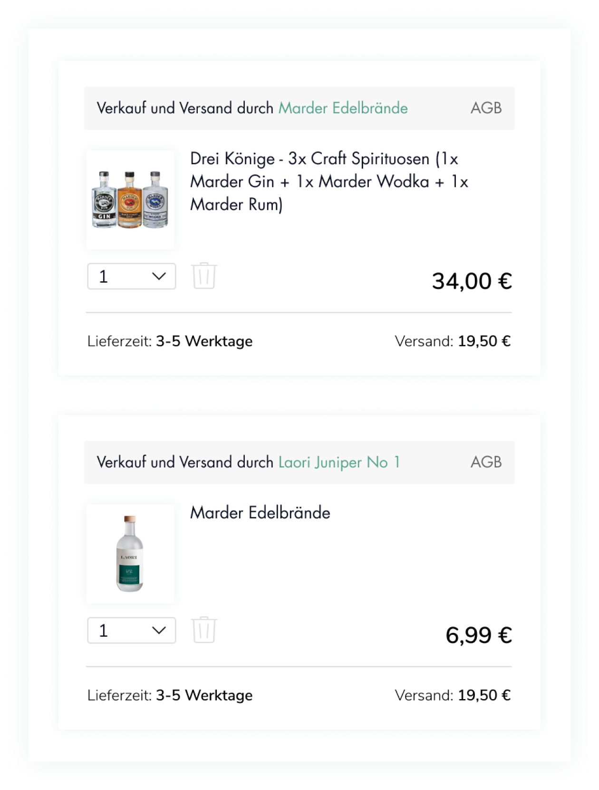
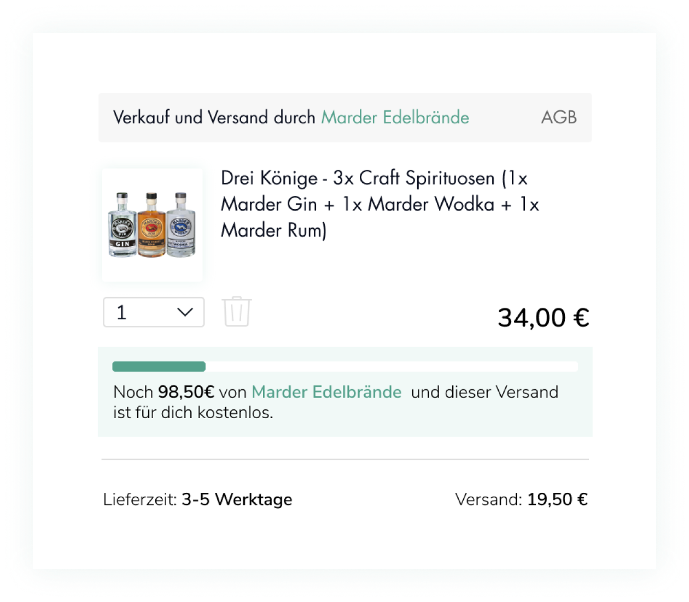
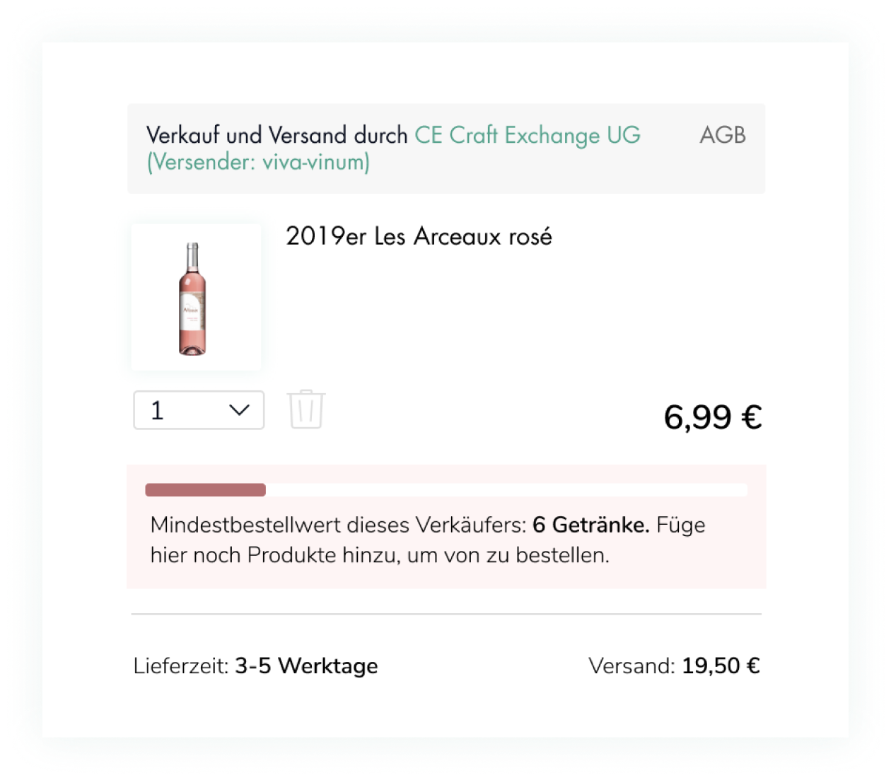

Создать чистый и современный интерфейс корзины для разных разрешений экранов
“Honest&Rare” — немецкий маркетплейс по продаже редких и необычных крафтовых напитков от маленьких производителей.
Здесь продаются крепкие алкогольные напитки, пиво, вино, кофе и лимонады.
Решение
Разработан чистый и современный дизайн
Раньше корзина воспринималась загроможденно и тяжело.
Теперь интерфейс очищен от лишних линий, информация считывается проще и быстрее.
Было
Стало
Создана визуальная иерархия кнопок и элементов
Товары в корзине группируются по продавцам
Особенность данного маркетплейса заключается в том, что поставка от каждого продавца рассчитывается
и доставляется отдельно. Поэтому стоимость и время доставки важно видеть индивидуально по каждому продавцу.

Разработан бар для случаев, когда есть ограничения от продавца на минимальную сумму заказа

Разработан бар для информирования о бесплатной доставке при доборе продуктов на определенную сумму

Всплывающее окно с кратким видом корзины позволяет отредактировать содержимое и перейти сразу к оформлению заказа
Что должно быть в идеальной корзине
Для понимания что должно быть в идеальной корзине были проанлизированы успешные кейсы из разных сегментов:
Супермаркеты: Rewe, Перекресток
Маркетплейсы: Ozon, Wildberries
Fashion: Avocado, Asos, J.Crew
На основе анализа составлен чек-лист для проверки интерфейса корзины:
Сумма заказа рассчитывается с учетом всех скидок и дополнительных расходов
Автоматический перерасчет суммы при изменении количества/удалении товаров
Есть возможность изменить количество и удалить товар из корзины
Есть кнопка очищения корзины
Перед удалением товара предлагается диалог с подтверждением или отменой действия
Кнопка «Оформить заказ» первой бросается в глаза
Название товара и поставщика — кликабельные ссылки
Есть возможность отложить товар из корзины в избранное
Есть возможность ввести и применить промокод
Из корзины есть доступ в каталог
В корзине присутствуют блоки с товарами, которые могут идти в дополнение к основной покупке.
Что влияет на метрики и конверсию
Согласно исследованию Baymard Institute 59% брошенных покупок в интернете связано
с непрямыми покупками. Большинство пользователей сравнивают и ищут лучшее ценовое предложение среди разных
продавцов или же просто просматривают сайты без намерения купить. Среди остальных причин в половине случаев
плохая товарная карточка и процесс оформления заказа, включая страницу корзины.
Резюме
Страница корзины стала удобной и современной.
На этапе решения задачи не было подключенной Google Analytics для сравнения метрик
и подсчета конверсии. Поэтому редизайн был сделан, опираясь на исследование лучших практик
на примере крупных и успешных магазинов из разных сегментов.
Для проверки интерфейса на этапе разработки проводились коридорные тесты.
Далее для повышения конверсии нужно доработать процесс оформления заказа.
Гипотезы по улучшению чекаута:
выводить корзину, выбор способа доставки и оплату на одну страницу;